CS184/284A Spring 2025 Homework 3 Write-Up
Link to webpage: https://cal-cs184-student.github.io/hw-webpages-swetha-inas-1/ Link to GitHub repository: https://github.com/cal-cs184-student/sp25-hw3-swetha-and-inas.git

Overview
In this project, we built a renderer to produce realistic images using a path tracing algorithm. We began by implementing ray generation and scene intersection, which involved converting coordinates from image space to camera space, generating pixel samples, and coding ray-triangle and ray-sphere intersection tests. We realized that even with basic shading, renders were slow. We implemented a Bounding Volume Hierarchy (BVH) to accelerate rendering and implemented intersection tests for bounding boxes and the BVH itself.
We also added direct illumination features, including a diffuse Bidirectional Scattering Distribution Function (BSDF), zero-bounce illumination (light reaching the camera directly), and direct lighting using both uniform hemisphere sampling and importance sampling of lights. We then added global illumination to further smooth renders, using recursive path tracing to estimate incoming light and Russian Roulette for unbiased termination.
Finally, we implemented adaptive sampling to reduce image noise by dynamically allocating more samples to regions that require better precision at the cost of an increased render time. Upon completion, we have a deeper appreciation for the complexity behind photorealistic computer-generated imagery.
Part 1: Ray Generation and Scene Intersection
Ray generation and primitive intersection parts of the rendering pipeline:
The Camera::generate_ray(...) function begins by converting hFov and vFov from radians to degrees. Next, we construct a transformation matrix to map points from image space to camera space: [2 * tan(0.5 * hFov_rad) 0 -tan(0.5 * hFov_rad) 0 2 * tan(0.5 * vFov_rad) -tan(0.5 * vFov_rad) 0 0 1]. This matrix is derived from the fact that its columns must include the u and v vectors along the camera space plane as well as the origin of the camera space plane. Since all points in camera space have a z coordinate of -1, we explicitly set this value after performing the 2D transformation of the normalized x and y coordinates. Next, we construct a ray in camera space using the transformed coordinates and the camera origin. We then apply the c2w transformation to convert both the origin and direction into world space, effectively generating a ray in world space. Finally, we initialize the ray's min_t and max_t values to nClip and fClip, respectively, and return the constructed ray.
Next, we implemented PathTracer::raytrace_pixel(...), which calls PathTracer::est_radiance_global_illumination(...) to estimate the integral of radiance over a specific pixel coordinate. This is done by averaging ns_aa samples and updating the sampleBuffer at that pixel location with the computed radiance integral. To achieve this, we called gridSampler->get_sample() ns_aa times. In each iteration, we added the x and y coordinates of the sample vector to the input x and y, then normalized them by sampleBuffer.w and sampleBuffer.h. These normalized coordinates were passed to generate_ray() to obtain a ray in world space, which was then passed to est_radiance_global_illumination(...) to estimate the scene radiance along the ray. Finally, we averaged the scene radiance from all ns_aa rays to estimate the integral of radiance over the pixel.
We also implemented functions to detect and determine the point(s) of intersection for the triangle and sphere primitives. These are described in more detail below.
The triangle intersection algorithm we implemented:
For triangle intersection, we used the concept that any point inside a triangle with vertices p1, p2, and p3 can be represented using barycentric coordinates: (1 - b1 - b2, b1, b2). We set this point, p1 * (1 - b1 - b2) + p2 * b1 + p3 * b2 equal to the ray equation: r(t) = o + t * d
By collecting terms and rewriting the equation in matrix form, we solved for t, b1, and b2 by multiplying the inverse of the matrix [-r.d, p2 - p1, p3 - p1] with r.o - p1.
Here, t represents the intersection time, while b1 and b2 are the barycentric coordinates corresponding to p2 and p3, respectively, which define the intersection point within the triangle. The barycentric coordinate corresponding to p1 is given by 1 - b1 - b2.
To determine whether an intersection occurs, we check if the following condition holds:
sol.x >= r.min_t && sol.x <= r.max_t && 1 - sol.y - sol.z >= 0 && 1 - sol.y - sol.z <= 1 && sol.y >= 0 && sol.y <= 1 && sol.z >= 0 && sol.z <= 1;
where sol.x represents t, sol.y represents b1, and sol.z represents b2.
In has_intersection(), if the condition is satisfied, we return true; otherwise, we return false. In intersect(), if the condition is met, we return true and update the intersection information as follows:- isect->t = sol.x;
- r.max_t = sol.x;
- isect->bsdf = get_bsdf();
- isect->primitive = this;
- isect->n = (1 - sol.y - sol.z) * n1 + sol.y * n2 + sol.z * n3;
Otherwise, we simply return false.
The sphere intersection algorithm we implemented:
For sphere intersection, we followed a similar approach in Sphere::test(...). We used the equation for a sphere: (p - o) ^ 2 - r2 = 0
Substituting p with the ray equation r(t) = o + t * d, we solved for the intersection times t using the quadratic formula, where:
- a = dot(r.d, r.d)
- b = 2 * dot(r.o - o, r.d)
- c = dot(r.o - o, r.o - o) - r2
If b² - 4ac was negative or if both intersection times were either less than r.min_t or greater than r.max_t, we returned false. Otherwise, we computed the minimum of the two intersection times (t1) and the maximum (t2), returning true.
The Sphere::has_intersection(...) function simply returns the boolean result from Sphere::test(...).
Meanwhile, Sphere::intersect(...) also performs the following assignments if at least one intersection occurs before returning the boolean value from Sphere::test(...):
- i->t = t1;
- if (t1 < r.min_t && t1 > r.max_t) { i->t = t2; }
- r.max_t = i->t;
- Vector3D normal_vec = r.at_time(i->t) - o;
- normal_vec.normalize();
- i->n = normal_vec;
- i->primitive = this;
- i->bsdf = get_bsdf();
Images with normal shading:
|
|

|

|

|
Sanity checks after tasks 1 and 2:
|
|

|
Part 2: Bounding Volume Hierarchy
Our BVH construction algorithm and the heuristic we chose for picking the splitting point:
In the BVHAccel::construct_bvh() function, we used the provided start and end iterators to gather the bounding boxes of all the primitive shapes and create a new bounding box (bbox) that encapsulates all these bounding boxes. We also created a new vector, std::vector<Primitive *> primitive_shapes, to store the individual primitives while iterating through them using the start and end iterators.
Next, we constructed a new BVHNode using bbox. We then checked if the size of the primitive_shapes vector was less than or equal to the max_leaf_size. If it was, we assigned node->start and node->end the same values that were passed to BVHAccel::construct_bvh() and returned the node.
If the size of primitive_shapes exceeded the max_leaf_size, we determined the longest axis of the bounding box (x, y, or z) and split along that axis. The split point was calculated as the average of the centroids along the longest axis. After determining the split point, we divided the primitives into two vectors—std::vector<Primitive *> *leftprimitives and std::vector<Primitive *> *rightprimitives—based on whether their centroid coordinate along the longest axis was less than or greater than or equal to the average.
Finally, we recursively called BVHAccel::construct_bvh() on the beginning and end of leftprimitives and rightprimitives with the same max_leaf_size, assigning the results to node->l and node->r respectively. After the recursion, we returned the node.
Images with normal shading for a few large .dae files that we can only render with BVH acceleration:
|
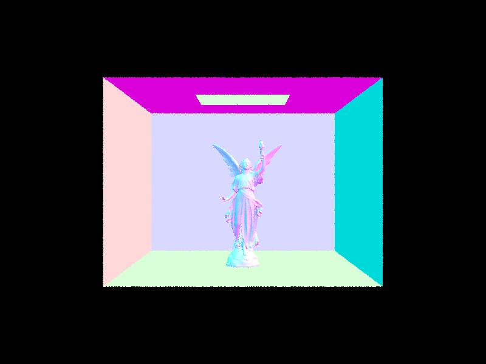
|
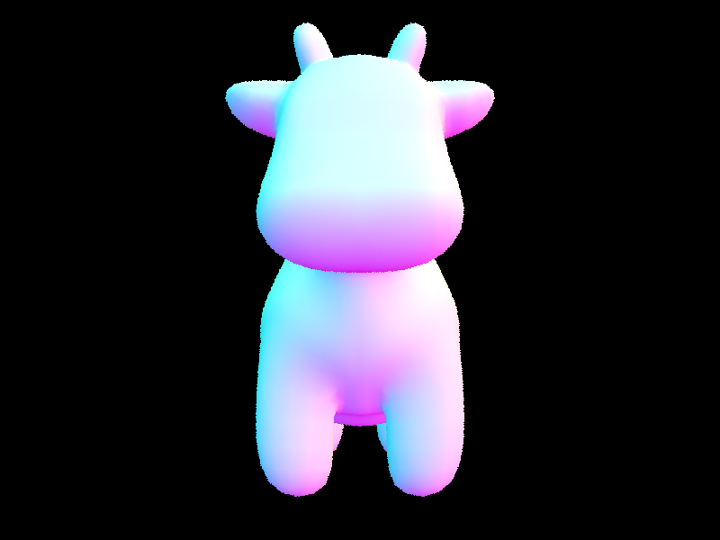
|
|
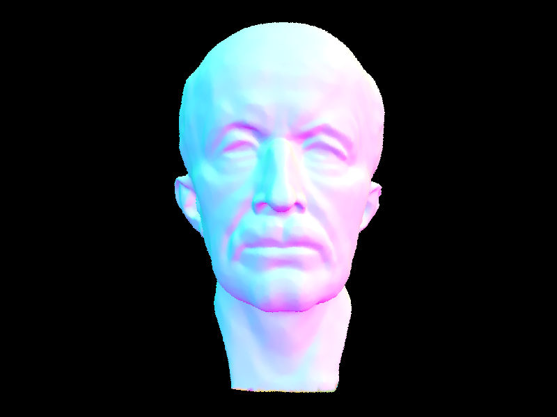
|

|
Rendering time comparison analysis on a few scenes with moderately complex geometries with and without BVH acceleration:
With BVH acceleration, we observed that maxplank.dae took 0.1635 seconds, cow.dae took 0.1192 seconds, and CBlucy.dae took 0.2122 seconds to collect primitives, build the BVH, and render the scene. In contrast, without BVH acceleration, maxplank.dae took 638.322 seconds, cow.dae took 90.2258 seconds, and CBlucy.dae took 2063.2387 seconds to complete the same process.
The reason for these longer rendering times is that, without BVH acceleration, every primitive in the scene must be checked during ray-scene intersection. In contrast, BVH acceleration constructs a binary tree that significantly reduces the number of necessary intersection tests. Instead of checking every primitive, the algorithm first determines whether the ray intersects a node's bounding box. If there is no intersection, we can immediately discard that node and its entire subtree, as the ray cannot intersect any primitives contained within it. This optimization reduces computational overhead and lowers the ray intersection complexity from O(n) to O(log n), greatly improving performance.
Part 3: Direct Illumination
Both implementations of the direct lighting function:
The direct lighting function using uniform hemisphere sampling operates by first iterating through the desired number of samples (num_samples), which in this case is calculated as scene->lights.size() * ns_area_light. In each iteration, we uniformly sample a direction in object space on the hemisphere:
Vector3D obj_sample = hemisphereSampler->get_sample();
Next, we construct a ray originating from the hit point and pointing in the direction of o2w * obj_sample. We initialize the ray’s min_t to be EPS_F to ensure that the ray doesn’t intersect the surface it started from. We then call the BVHAccel::intersect(Ray& r, Intersection* i) function to check for an intersection. If an intersection occurs, we retrieve the emission of the intersected object:
Vector3D l = obj_intersection.bsdf->get_emission();
We then compute cos_angle by taking the dot product of the sampled direction and the normal of the input intersection (isect) in object space, which is (0, 0, 1):
double cos_angle = dot(obj_sample, Vector3D(0, 0, 1));
Additionally, we use the object's BSDF to determine how much light is reflected onto the outgoing direction w_out from our sampled direction:
Vector3D fr = isect.bsdf->f(obj_sample, w_out);
Since our sample directions are uniformly distributed over the hemisphere, the probability associated with each sampled direction is:
double prob = 1 / (2 * M_PI);
We then accumulate the contribution to L_out using:
L_out += (fr * l * cos_angle) / prob;
After repeating this process num_samples times, we compute the final radiance estimate by averaging:
L_out /= num_samples;
Finally, we return L_out.
The direct lighting function, implemented via importance sampling of light sources, operates by iterating through all scene lights provided by scene->lights. For each light, given by SceneLight* sceneL = scene->lights[i], we first check whether it is a point light source using sceneL->is_delta_light(). If it is a point light source, we set the number of samples, num_samples, to 1; otherwise, we set it to ns_area_light.
Next, we sample the light num_samples times, calculating the emitted radiance using:
Vector3D scene_radiance = sceneL->sample_L(hit_p, &wi, &distToLight, &pdf);
Here:
- wi is the sampled direction in world space from hit_p to sceneL.
- distToLight represents the distance between hit_p and sceneL along wi.
- pdf is the probability density function evaluated at wi.
If distToLight is positive—indicating that the light is not behind the surface at the hit point—we construct a ray originating from hit_p in the direction of wi. To prevent self-intersections, we set the ray’s min_t to EPS_F. Similarly, we set its max_t to distToLight - EPS_F to ensure it does not intersect sceneL.
If this ray does not intersect any objects, then there is no obstruction between hit_p and sceneL, meaning sceneL contributes light to hit_p. In this case, we use the object's BSDF to determine how much light is reflected in the outgoing direction, w_out, from the sampled direction:
Vector3D fr = isect.bsdf->f(w2o * wi, w_out);
Next, we compute cos_angle by taking the dot product of the sampled direction and the normal of the input intersection (isect) in object space, which is (0, 0, 1):
double cos_angle = dot(w2o * wi, Vector3D(0, 0, 1));
Finally, we accumulate the contribution to L_out using:
L_out += ((fr * scene_radiance * cos_angle) / pdf) / num_samples;
After all samples are processed, we return L_out.
Some images rendered with uniform hemisphere sampling:
|
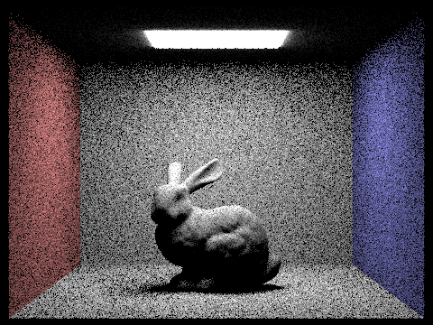
|
|
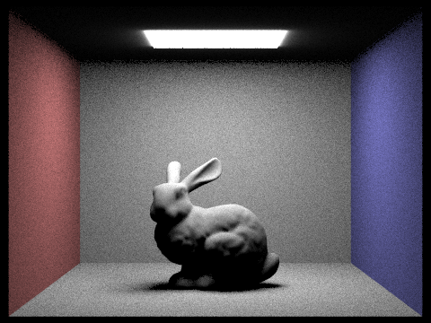
|
Some images rendered with importance sampling lights:
|
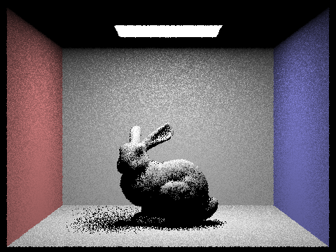
|
|
|
Comparing the noise levels in soft shadows when rendering with 1, 4, 16, and 64 light rays (the -l flag) and with 1 sample per pixel (the -s flag) using light sampling, not uniform hemisphere sampling:
As demonstrated below, we observed that increasing the number of light rays reduced noise in the soft shadows. In particular, the shadow cast beneath the bunny became more defined, with the pixels forming the shadow appearing more concentrated and less dispersed or grainy. The most noticeable improvement occurred when increasing from 1 light ray to 4, resulting in a significant reduction in noise.
|
|
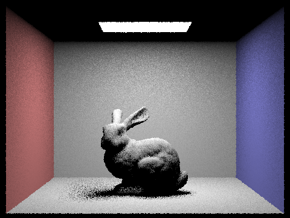
|
|
|
|
Comparing the results between uniform hemisphere sampling and lighting sampling:
We observed that uniform hemisphere sampling introduced more noise in the renders compared to light source sampling. For the same ../dae/sky/CBbunny.dae render—using identical settings of 64 samples per pixel, 32 light rays, 6 light bounces, and an output resolution of 480 × 360—we noticed that both the background and the bunny appeared significantly grainier with uniform hemisphere sampling. In contrast, importance sampling of light sources produced much cleaner images with noticeably reduced noise. Increased noise occurs with uniform hemisphere sampling because many of the sampled rays do not point towards a light source. As a result, the incoming radiance is zero for most sampled directions, leading to a noisier output. On the other hand, importance sampling prioritizes directions where the incoming radiance is more likely to be non-zero. This results in a smoother, less noisy render.
Part 4: Global Illumination
Our implementation of the indirect lighting function:
We added support for indirect lighting on top of our direct lighting function to consider light reflected from other surfaces within the scene. In est_radiance_global_illumination(), we first call zero_bounce_radiance() for direct surface emission and then call at_least_one_bounce_radiance() and add the result of it.
Inside at_least_one_bounce_radiance(), we begin by calling one_bounce_radiance() to compute the direct lighting contribution at the current intersection. If the ray’s depth is 1 or less, we return immediately since no further bounces are allowed. If not, we proceed to estimate indirect lighting. To reduce unnecessary computation, we use Russian Roulette to probabilistically terminate low-contribution paths: we flip a biased coin with a fixed termination probability (e.g., 0.05), meaning there's a 5% chance we terminate and a 95% chance we continue.
If the path continues, we sample the BSDF at the surface intersection using isect->bsdf->sample_f() to generate a new direction and construct a new ray with reduced depth. We then check for intersection with the scene. If an intersection is found, we recursively call at_least_one_bounce_radiance() with the new ray. The returned radiance is then scaled by the BSDF value, cosine term, and divided by the sampling PDF. Finally, we add this to the accumulated indirect illumination and the return the total.
Images rendered with global (direct and indirect) illumination:
|
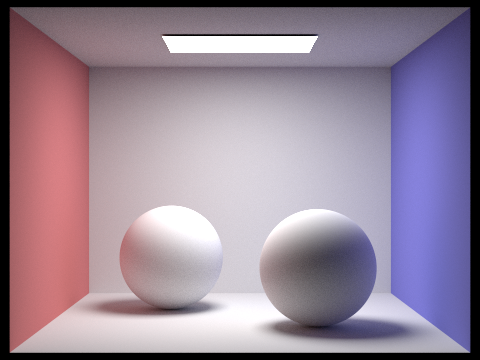
|
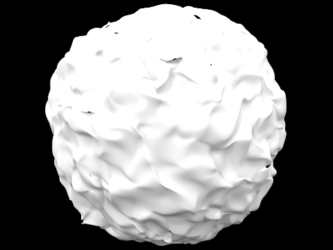
|
Comparing rendered views with only direct illumination and indirect illumination:
As demonstrated below, the image with only direct illumination has sharp shadows and less color transfer, while the image with only indirect illumination showcases a softer, dimmer, and diffused image because of multiple bounces of light within the scene.
|
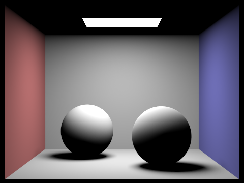
|
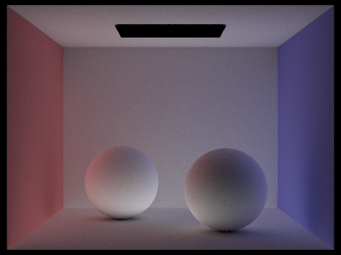
|
Rendering the mth bounce of light for CBbunny.dae with max_ray_depth set to 0, 1, 2, 3, 4, and 5 (the -m flag), and isAccumBounces=false:
|
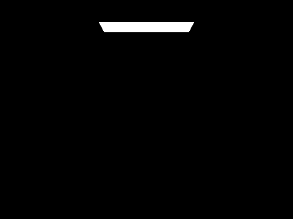
|
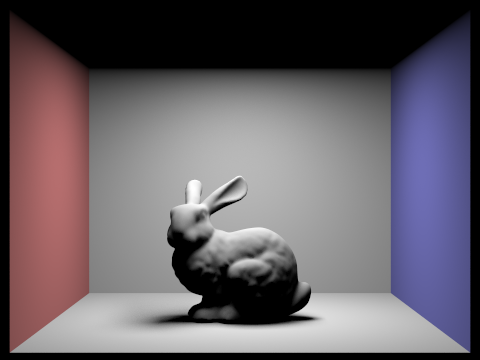
|
|
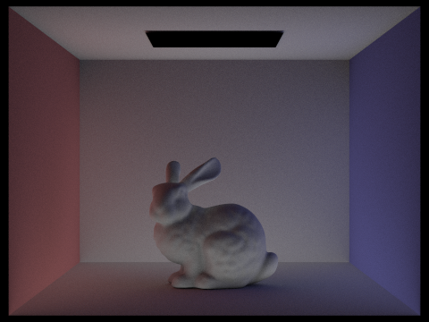
|
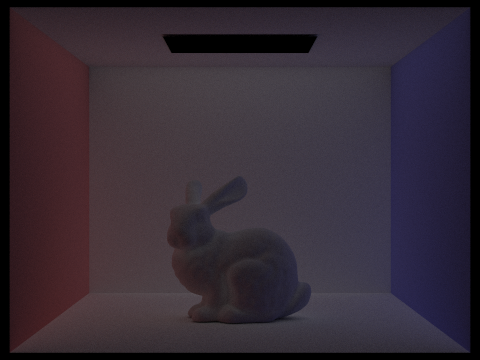
|
|
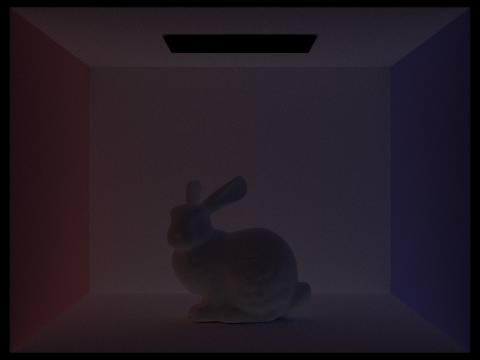
|
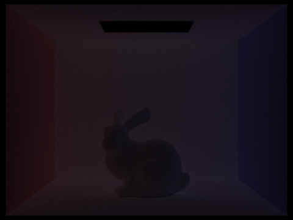
|
What we see for the 2nd and 3rd bounce of light and how it contributes to the quality of the rendered image compared to rasterization:
The 2nd and 3rd bounces of light create a softer and more natural-looking result. This is because in path tracing, it accounts for factors like light bouncing, energy conservation, and color spill surfaces. In comparison to rasterization, it produces more accurate photos without the extra approximations.
Rendered views of accumulated and unaccumulated bounces for CBbunny.dae with max_ray_depth set to 0, 1, 2, 3, 4, and 5 (the -m flag):
|
|
|
|
|
|
|
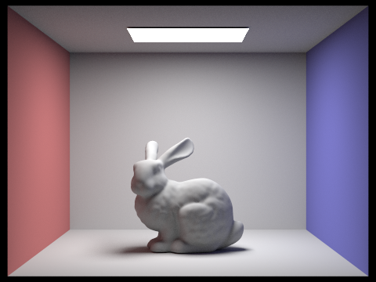
|
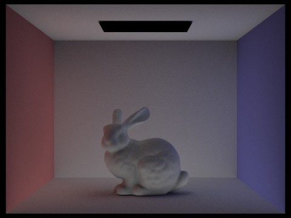
|
|
|
|
|
|
|
|
|
|
Outputting Russian Roulette rendering with different max_ray_depths and 1024 samples per pixel:
|
|
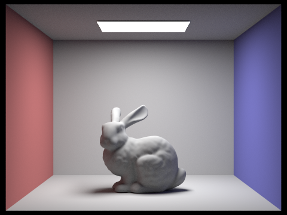
|
|
|
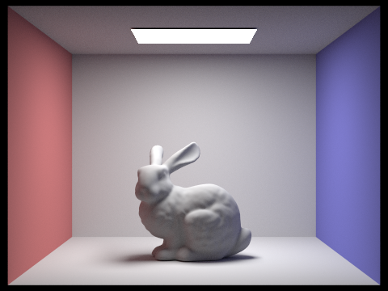
|
|
|
|
Comparing rendered views of CBspheres_lambertian.dae with various sample-per-pixel rates, including at least 1, 2, 4, 8, 16, 64, and 1024, using 4 light rays:
As demonstrated below, every step up in sample count reduces the noise and the color transitions on the walls and the light falloff on the spheres look more consistent and smoother.
|
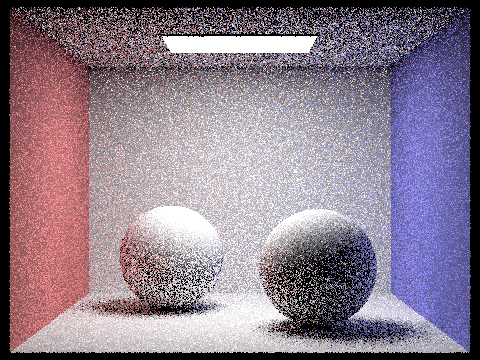
|
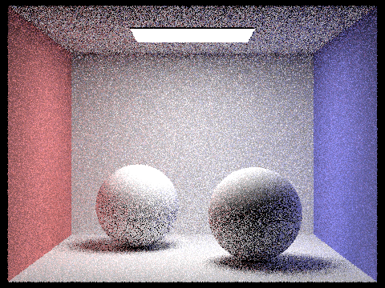
|
|
|
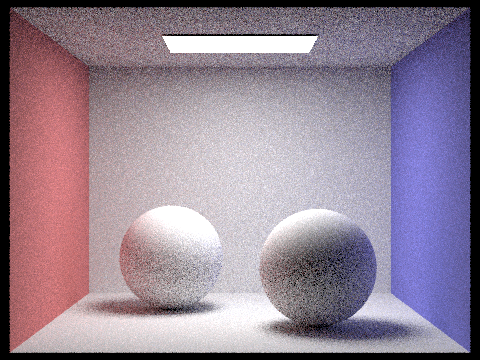
|
|
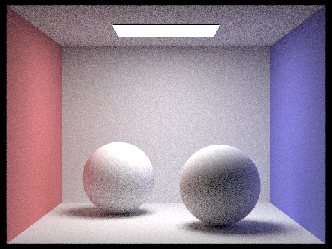
|
|
|
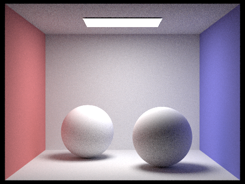
|
|
Part 5: Adaptive Sampling
Adaptive sampling and our implementation of it:
From what we observe, Monte Carlo path tracing is effective for producing realistic images, but it often introduces significant noise. While increasing the number of samples per pixel can help reduce this noise, it’s not the most efficient approach. Adaptive sampling offers a more optimized solution by adjusting the sampling rate based on how quickly each pixel converges. This method avoids uniformly oversampling all pixels and instead allocates fewer samples to pixels that converge quickly and more to those in complex regions of the image.
To implement this, we modified the raytrace_pixel() function with a simple adaptive sampling algorithm. We start by initializing two variables, s1 and s2, to zero. As we loop through the samples, we calculate the illuminance of each one and update s1 and s2 with the cumulative illuminance and the square of the illuminance, respectively. At regular intervals (every samplesPerBatch iterations), we compute the mean and standard deviation using these values. By dividing the standard deviation by the number of samples taken so far, we estimate how much the pixel has converged. If this value is less than or equal to maxTolerance multiplied by the mean, we consider the pixel converged and stop sampling early. If not, we continue sampling as usual.
Task: Pick two scenes and render them with at least 2048 samples per pixel. Show a good sampling rate image with clearly visible differences in sampling rate over various regions and pixels. Include both your sample rate image, which shows your how your adaptive sampling changes depending on which part of the image you are rendering, and your noise-free rendered result. Use 1 sample per light and at least 5 for max ray depth.
|
|
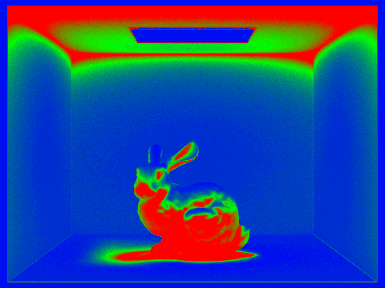
|
|
|
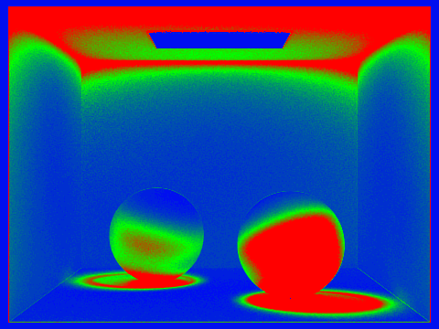
|
|
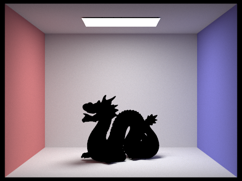
|
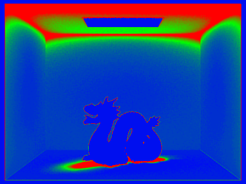
|
Final Reflections
Throughout the project, we met up both in person and online to discuss different approaches to the tasks. We divided up the work to parallelize our process side-by-side and reviewed each other's tasks to make sure that we understood the whole project together. The concepts taught in this homework are new to both of us, so it was helpful to be able to work through it together and debug. Even though we were both caught up with midterms and other projects, we made sure to maintain a clear line of communication to share insights whenever something was unclear. Not only did we learn a lot about ray tracing and illumination, both conceptually and technically, but we also improved our teamwork skills. We even got accustomed to more efficient time management towards the end because of the longer rendering times!